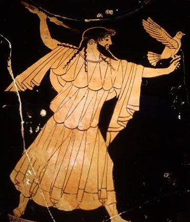

Deuses Olímpianos
Os doze grande deuses também conhecido como os olimpianos, Juntos eles presidiam sob todo o aspecto da vida humana. A deusa Hestia (listada aqui como secundária) algumas vezes era incluída no lugar de Dionísio.


Outros Deuses Olímpianos
Um número de outros deuses são descritos como olimpianos. A maioria deles sendo funcionários ou serviçais dos doze principais deuses.
Categorias dos Deuses do Olimpio
Categorias em que os deuses eram cultuados em conjunto em locais e situações específicas.
Vaso grego mostrando Zeus com uma águia e um trovão.
Figura ateniense cerca do século 5 AEC

Os THEOI¹ OLYMPIOI presidiam sobre todas as caracteristicas da vida e eram comumentel agrupados de acordo com suas funções.
Os THEOI AGORAIOI eram os deuses da "Ágora" (o mercado e assembléia do povo). Zeus, como o deus dos reis e princepes, presidia sob a assembléia junto de Atena, como deusa dos conselhos sábios.
Outros deuses incluma Dike (justiça), THemis (costume) e Calliope (Eloquência). Os deuses do mercado eram liderados por Hermes, deus do comércio, junto de Hefesto e Atena deuses patrões dos artesões, tecelões, ferreiros, escultores e etc.
Apollo era outro deus do mercado.
Os THEOI DAITIOI eram os deuses das festas e banquetes. Dionisio, deus do vinho, e hestia, deusa das festividades, presidiam sobre esses.
Eles eram acompanhados por deuses festivos como Afrodite, deusa do prazer, e das Cárites, deusas da alegria, dança e outras diversões. Os THEOI MOUSIKOI, ou deuses da música também acompanhavam a festa.
Os THEOI GAMELIOI eram os deuses do casamento.
O primeiro destes eram Zeus, Hera e Afrodite mas outros incluiam Hymenaios (músicas de casamento), Os Erotes (amores), Peítho (Persuasão), As Cárites, Eunomia (Boa ordem), Harmonia e Heve (juventude).
Os THEOI GEORGIKOI eram deusas da agricultura. A olimpiana Demeter era a líder, mas na grande maioria estes eram deuses não-olimpianos do chtonicos.
Os THEOI GYMNASTIKOI eram os deuses do ginásio, atletismo e jogos.
O primeiro destes eram Hermes, Heracles e os Dióscuros. Nike (vitória) e Agon (Concurso) era espiritos menores dos jogos. Eros, como um deus da camaradagem, era frequentemente cultuado no ginásio.
Os THEOI HALIOI eram deuses do mar liderados pelo Rei Poseidon.
Diversos outros deuses olimpianos tinha funções marítimas menores incluindo Apollo, Artemis, Afrodite e os Dioscuri que presidiam sobre embarcações, portos, viagens seguras e salvações de tempestades.
A maioria desta casta de deuses, entretanto, eram entidades marinhas não olimpianas.
Os THEOI IATRIKOI eram deuses da medicina e da cura. Estes deuses eram presididos por Apollo e incluiam seu filho deus da medicina, Asclepius e sua família.
Epione (Calma), Hygeia (boa saude), Panaceia (curativos), Aegle (radiancia), Iaso (cicatrização), Aceso (cura) e Telesphorus (realizador).
Os THEOI KTESIOI eram deuses da casa e do lar.
Eles eram liderados por Zeus, protetor da casa junto de Hestia, a deusa da lareira².
Hecate e Hermes também era importantes deuses das casas ja que eles eram protetores de portões e entradas.
Os THEOI MANTIKOI eram os deuses dos oraculos, divinhação e profecia.
Eles eram liderados por Apollo, o deus dos oraculos e videntes e Zeus, deus do destino.
Outroes deuses oraculos incluem Themis, Dione e Hermes que era considerado deus de formas primitivas de adivinhação como astrologia e arremesso de moedas.
Os THEOI NOMIOI eram os deuses do interior e atividades rurais como caçar, pescar e o pastoreio de animais.
Eles eram liderados por Artemis (na caça), Hermes (para o pastoreio) e Dionisio. O resto dos deuses do intererior eram deuses menores não-olimpianos.
Os THEOI MOUSIKOI eram deuses da música, dança e educação em artes.
Eles eram liderados pelos deuses gemêos Apollo e Artemis, o primeiro presidia sobre música e poesia e a ultima sobre coro e dança de garotas.
Outros deuses importantes incluiam as nove musas, as Cárites, e os semi-deuses Hymenaeus and Linos.
Dionisio, Hermes e afrodite também eram deuses da música e das artes.
Os THEOI POLEMIKOI eram os deuses da guerra.
Estes eram liderados por Ares e Atena e incluiam deuses como Eyno, Eris (discórdia), Nike (vitória), Deimos (terror) e Phobos (medo).
Zeus, como deus do destino e Apollo como deus dos arcos e arqueiros também tinham funções durante periodos de guerra.
THE THEOI THESMIOI were the gods of divine law and custom.
These were led by Zeus Nomius (of the Laws) and Demeter Thesmophorus (the Law Bringer).
Lesser gods in this sphere included the Horae, specifically Dike (Justice), Eunomia (Good Order), and Irene (Peace), their mother Themis (Custom), and Apollo.
Os Theoi THESMIOI eram deuses das leis divinas e costumes.
Estes eram líderados por Zeus e Demeter.
Outros deuses incluiam Dike (justiça), Eunomia (boa ordem), Irene (paz), Themis (costume) e Apollo.
Notas:
¹Theoi em grego significa "Deuses"
²era comum que casas na grécia antiga possuirem uma lareira central na sala, as cidades costumavam terem uma lareira no centro da cidade também.
Uma Lista completa dos Deuses do Olimpio
AGLAEA A deusa da beleza e adorno. Ela era uma das três carites e a esposa do deus Hefesto.
AEGLE A deusa do brilho radiante da boa saúde. Ela era filha do deus da medicina Asclépio.
AKESO A deusa da cura de doenças. Ela era uma das filhas de Asclépio.
ALEXIARES Filho do deus Hércules, que com seu irmão Aniceto guardava os portões do Olimpo. Seu nome significa "o invencível".
ANICITUS Um filho do deus Heraces, chamado "aquele que afasta a guerra". Ele era um dos porteiros do Olimpo.
AFRODITE Uma das doze grandes Olímpianos. Ela era a deusa do amor, da beleza e da procriação. Ao lado de Zeus e Hera, ela também era a líder dos Theoi Gamelioi ou deuses do casamento.
APOLLO Um dos doze grandes deuses do Olimpo. Ele era o deus da música, profecia e cura, e o líder dos Theoi Mousikoi (deuses da música) e Theoi Mantikoi (deuses da profecia).
ARES O grande deus olímpico da guerra e do conflito. Ele era o líder dos Theoi Polemikoi ou deuses da guerra..
ARIADNE A esposa do deus Dionísio. Ela recebeu um assento ao lado de seu marido entre os deuses dos céus.
ARTEMIS Uma das doze olimpianos, Artemis era a deusa da caça, dos animais selvagens, do parto e das crianças. Ela também era uma deusa mortífera que trouxe morte súbita para as mulheres com suas flechas. Ao lado de seu irmão Apolo, ela era uma líder dos Theoi Mousikoi ou deuses da música, presidindo a música e a dança das donzelas.
ASCLEPIUS O deus da medicina e da cura. Ele era originalmente um homem mortal que foi destruído por Zeus pelo crime de restaurar a vida dos mortos. Depois ele foi recebido no Olimpo como um deus.
ATENA Uma das doze grandes olímpicas, Atena era a deusa da guerra, das fortificações e da defesa das cidades, dos bons conselhos e dos esforços heróicos. Ela também era uma deusa padroeira dos artesãos, presidindo as artes da tecelagem, cerâmica, carpintaria e fabricação de óleo.
BIA A deusa da força. Ela era um dos quatro espiritos alados que serviam no trono de Zeus.
CALLIOPE A líder das nove Musas e deusa da poesia épica. Ela também concedeu o dom da eloquência a reis e príncipes.
Cárites As deusas da alegria, prazer, regozijo, beleza, dança, festas e banquetes. As três Graças eram servas das deusas Hera e Afrodite e servas de Dionísio. Eles foram contados entre os Theoi Gamelioi (deuses do casamento) e Theoi Datioi (deuses do banquete).
CLYMENE A deusa Titã da fama e renome. Ela era uma serva da deusa Hera.
CLIO A musa dos escritos históricos.
CRATUS O deus da força e do poder. Ele era um dos quatro Daemones alados que serviam ao trono de Zeus.
DEIMUS O deus do medo. Ele era um filho de Ares que acompanhou seu pai no campo de batalha.
DEMETER Uma das doze grandes deusas do Olimpo, Demeter era a deusa da agricultura: desde o arar da terra até a moagem de grãos para farinha.
DIKE A deusa da justiça, que relatou os delitos do homem a seu pai Zeus. Ela era uma das três Horae, deusas das estações e da ordem celestial.
DIONE mãe da deusa Afrodite. Ela era uma deusa profética, associada ao grande oráculo de Zeus em Dodona.
DIONÍSIO Um dos doze grandes deuses do Olimpo. Ele era o deus do vinho, da viticultura e da vegetação selvagem.
DIOSCURI Os deuses dos cavaleiros e ginásios, deuses patronos dos Jogos e protetores dos marinheiros. Castor e Polydeuces, os gêmeos Dioscuri, eram originalmente um par de heróis mortais. Quando Polydeuces recebeu a imortalidade de seu pai Zeus, ele insistiu em compartilhar o benefício com seu irmão. Como resultado, a dupla passou dias alternados no céu e no submundo.
EILEITHYIA A deusa do parto e das dores do parto. Ela era filha de Zeus e Hera.
EIRENE A deusa da paz. Ela era uma das três Horae, deusas da ordem celestial e das estações.
ENYO A deusa da guerra, companheira de Ares.
EPIONE A deusa do alívio da dor. Ela era a esposa do deus da medicina Asclépio.
ERATO A Musa da poesia amorosa e da mímica.
ERIS A deusa da luta. Ela era irmã e companheira do deus Ares.
EROS O deus do amor e do desejo sexual. Ele era o filho e servo divino da deusa Afrodite.
EROTES Os deuses alados do amor. Um bando de três (Himerus, Pothos e Eros) acompanhou a deusa Afrodite.
EUNOMIA A deusa da boa ordem. Ela era uma das três Horae e uma atendente de Afrodite que estava entre os Theoi Gamelioi ou deuses do casamento.
EUPHROSYNE A deusa da alegria e do bom humor. Ela era uma das três irmãs carites.
EURYNOME A deusa dos pastos floridos. Eurynome era mãe dos carites e uma serva da deusa Hera.
EUTERPE Uma das nove Musas. Ela presidiu a poesia lírica.
GANYMEDES O copeiro de Zeus que servia néctar nas festas dos deuses. Ele era originalmente um príncipe troiano cuja beleza chamou a atenção de Zeus.
HARMONIA A deusa da harmonia. Como filha de Ares e Afrodite, ela era uma deusa da guerra (uma das Theoi Polemikoi) e do casamento (uma das Theoi Gamelioi). Harmonia representava unidade e ação harmoniosa.
HEBE A deusa da juventude. Ela era uma das Theoi Gamelioi ou deuses do casamento, filha de Zeus e Hera e esposa de Héracles.
HEFESTO Um dos doze deuses governantes do Olimpo. Hefesto era o deus do artesão que presidia a metalurgia, a construção, a escultura e a arte.
HERA A Rainha dos deuses e esposa de Zeus. Hera era a deusa das mulheres e a líder dos Theoi Gamelioi ou deuses do casamento. Ela também era uma deusa do céu e das estrelas.
HERACLES O maior dos heróis gregos. Após sua morte, ele foi recebido no Olimpo, tornando-se o porteiro do céu, o deus da força e do esforço heróico e o que evita o mal.
HERMES Um dos doze grandes deuses do Olimpo. Ele era o arauto de Zeus e o deus dos rebanhos e manadas, das artes do campo, das viagens, do comércio, dos mercadores e do roubo.
HESTIA A deusa da lareira. Com Zeus, ela era a líder dos deuses da casa e do lar, que também presidia a festa e a chama do altar. Como Ártemis e Atena, ela era uma deusa virgem.
HIMERUS Os deus do desejo sexual. Os Erotes Himerus, Pothus e Eros eram servos da deusa Afrodite.
HORAE As deusas das estações e da ordem do céu. Individualmente presidiam a paz (Eirene), a justiça (Dike) e a boa ordem (Eunomia). As Horae também eram guardiãs dos portões do céu e servas da deusa Hera.
HYGEIA A deusa da boa saúde, uma das muitas filhas de Asclépio.
HYMENAEUS O deus dos casamentos e do hino do casamento. Ele era um lacaio alado da deusa Afrodite, contado entre os deuses do casamento.
IASO A deusa das curas e remédios, filha do deus da medicina Asclépio.
ÍRIS A deusa do arco-íris e mensageira dos deuses. Ela era a serva pessoal da deusa Hera.
LETO A deusa Titã da maternidade e recatada mulher. Ela era a mãe dos gêmeos olímpicos Apolo e Ártemis.
LEUCIPPIDES As esposas da deusa dos gêmeos Dioscuri. Elas eram originalmente princesas mortais que foram levadas para o céu pelos deuses.
LITAE As velhas deusas da oração que entregavam as orações dos homens aos deuses no céu.
MELPOMENE A deusa musa das peças da tragédia.
MOIRAS As três deusas do destino que teceram o fio do destino humano. Eles eram atendentes de Zeus Moiragete ("Líder dos Destinos").
MUSAS Nove deusas irmãs da música, canto, dança e outras artes. Eles eram lacaios do deus Apolo Musagete ("Líder das Musas") e cantavam como um coro nas festas dos deuses.
NIKE A deusa da vitória. Ela era um dos quatro irmãos alados que guardavam o trono de Zeus, sendo os outros Bia, Cratus e Zelus. Nike também era o cocheiro pessoal de Zeus.
OCEANIDES Deusa e filhas ninfas do grande rio Oceanus, que circunda a terra. Muitas delas eram servas dos deuses do Olimpo, incluindo a trupe de Ártemis, a comitiva de Deméter, Clymene de Hera e Peitho de Afrodite.
PAEON O médico dos deuses do Olimpo. Este talvez era outro nome de Asclépio.
PANACEIA A deusa dos curativos, literalmente chamada de "toda a cura". Ela era uma das filhas do deus da medicina Asclépio.
PEITHO A deusa da persuasão e da fala sedutora. Ela era uma serva de Afrodite e uma das Theoi Gamelioi (deuses do casamento).
PHOBOS O deus do pânico. Ele era um dos Theoi Polemikoi (deuses da guerra), um lacaio de seu pai Ares.
POLYHYMNIA A deusa musa dos hinos religiosos. Ela também era conhecida como Polymnia
POSEIDON O rei do mar e um dos doze deuses governantes do Olimpo. Ele também era o senhor dos rios, lagos e outras fontes de água doce, e o deus dos cavalos e carruagens. Ao contrário dos outros deuses do Olimpo, ele residia no mar e não no céu, embora ainda participasse de todos os conselhos e festas dos deuses celestiais.
POTHUS O deus do desejo sexual. Ele era um Erote (Deus do Amor) alado a serviço de Afrodite.
PSYCHE A deusa da alma e esposa do deus Eros.
TERPSICHORE A musa da dança coral e da música.
THALIA (1) A musa da comédia dramática e da poesia idílica.
THALIA (2) A deusa dos banquetes e festividades. Ela era uma das três Graças (carites).
THEMIS A deusa Titã da lei e ordem divinas, costumes e tradições. Ela também era uma deusa profética, a líder da assembléia e a conselheira pessoal de Zeus.
THYONE A mãe do deus Dionísio. Thyone é o nome divino de Semele, que foi trazida ao Olimpo por seu filho após sua morte.
TYCHE A deusa da boa sorte. Ela às vezes era representada como uma serva da deusa Hera.
URANIA A deusa Musa da astronomia e dos escritos astronômicos.
ZELUS O deus da rivalidade e competição. Ele era um dos quatro Daemones alados que guardavam o trono de Zeus.
ZEUS O grande Rei dos Deuses, governante do Olimpo e dos Céus, e líder dos Doze. Ele era o deus do céu, clima, reis, destino, lei e ordem.